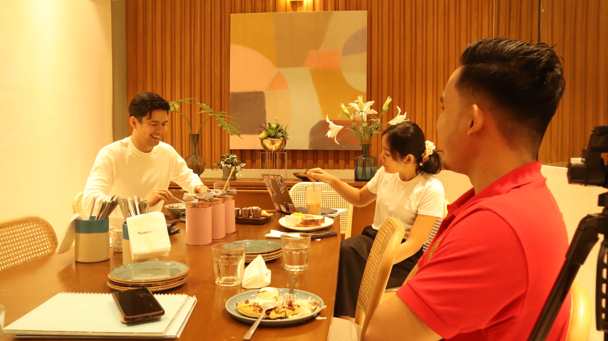
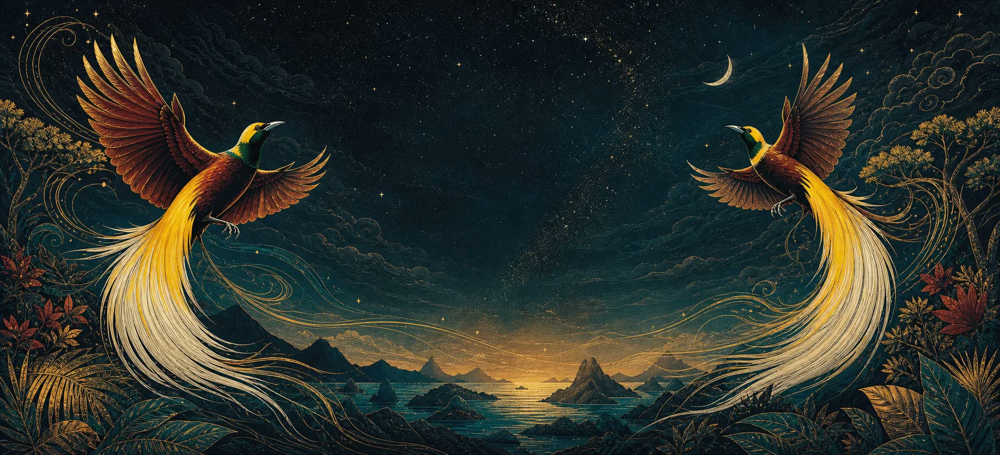

Saya menyerap bunyi dan emosi lewat Tulus, Lyodra, Ziva, Mahalini, Afgan, dan banyak suara lain yang saya dengarkan berulang kali.
Aljohn · Indonesia × Filipina
Bahasa ini membawa saya kepada orang-orang.
Saya mulai karena ingin mengenal budaya Indonesia. Lalu satu lagu membuka percakapan, percakapan membawa saya ke acara komunitas, dan bahasa ini perlahan membentuk saya sebagai musisi.

1 / 3
Saat berbicara dengan orang Indonesia, kemiripan dengan Filipina terasa dekat—tetapi perbedaannya justru membuat saya ingin terus belajar.
Dari Indonesian Idol sampai kompetisi menyanyi di Manila, Bahasa Indonesia akhirnya ikut membentuk cara saya bernyanyi.
Arsip pribadi · pilih satu video
Bahasa Indonesia di depan kamera
Di sinilah perjalanan saya terdengar apa adanya: belajar lagu, berbicara dengan orang Indonesia, bertemu musisi, dan hadir di perayaan komunitas.

Percakapan panjang · Bahasa Indonesia
Masuk lebih dalam lewat podcast
Wawancara panjang memberi waktu untuk mengenali ritme, slang, argumen, dan cara para tamu bercerita tanpa naskah.
Suara yang menemani perjalanan saya
Dengarkan Indonesia dari banyak arah
Musik membantu saya mengenali emosi dan pelafalan; percakapan panjang melatih telinga; keseharian menunjukkan bahasa sebagaimana benar-benar dipakai.
Saring menurut tingkat CEFR
Semua tingkat ditampilkan.
Dua klasik Indonesia untuk dibaca perlahan
Bumi Manusia dan Sitti Nurbaya membuka jalan menuju sejarah, masyarakat, dan bahasa sastra Indonesia. Rentang CEFR adalah panduan awal—pilih kisah yang membuatmu ingin terus membaca.
Kabar komunitas · Gelombang 1, 2026
Membantu lebih banyak orang Filipina menemukan BIPA.
Ketika KBRI Manila membuka kelas Bahasa Indonesia gratis secara daring, saya ikut menyebarkan pengumumannya melalui halaman Facebook saya. Program ini mempertemukan pelajar dengan guru sungguhan dan jalur resmi untuk masuk lebih dalam ke bahasa serta budayanya.
- Pendaftaran
- 30 Januari–8 Februari 2026
- Kelas dimulai
- 14 Februari 2026
- Jadwal Sabtu
- BIPA 1 & 2 · 10.00–12.00
BIPA 4 · 13.00–15.00 - Format
- Sepenuhnya daring
Masa pendaftaran ini telah berakhir. Ikuti laman resmi Atdikbud Manila untuk gelombang selanjutnya.
Manila · tempat bahasa menjadi pertemuan
KBRI Manila membuka pintunya—dan saya masuk.
Pada perayaan HUT RI ke-79, saya tidak hanya datang sebagai pelajar bahasa. Saya bertemu keluarga Indonesia–Filipina, mencicipi makanan, mendengarkan musik, dan naik ke panggung kompetisi menyanyi. Di ruang seperti inilah bahasa terasa hidup.
Lomba BIPA 2025 · 15 November · KBRI Manila
Juara 1 dalam kompetisi menyanyi Bahasa Indonesia.
Panggung ini merangkum banyak hal yang Bahasa Indonesia berikan kepada saya: latihan, musik, keberanian, dan sebuah komunitas yang ikut merayakannya.
Tonton vlog lengkap1 / 6
1 / 2
Mengenang Bapak Agus Widjojo · 1947–2026
“Saya akan meneruskan jembatan yang Bapak bangun.”
Suatu hari, saya datang ke sebuah acara Indonesia tanpa rencana. Bapak Agus Widjojo langsung membuat saya merasa diterima. Setiap kali kami bertemu lagi di berbagai acara, selalu ada kegembiraan—dan saya bisa merasakan sendiri ketajaman humornya.
Di balik diplomat karismatik yang saya kenal, beliau juga seorang pemikir reformasi militer yang memikul sejarah berat dan ikut mendorong perubahan hubungan sipil–militer Indonesia. Video ini adalah penghormatan saya kepada sosok yang jauh lebih besar daripada jabatan duta besar.
Bapak Agus Widjojo, saya berkomitmen menjaga hubungan Indonesia dan Filipina tetap hidup.
Tempat makan di dalam cerita video saya
Empat tempat makan ini ikut hadir dalam video Bahasa Indonesia saya. Citra Minang di PBCom Tower menjadi titik awalnya: video Bahasa Indonesia pertama saya direkam di sana.
Catatan saya
Saya belum selesai mendengarkan.
Bahasa Indonesia memberi saya lebih dari kosakata. Ia memberi saya lagu untuk dinyanyikan, orang-orang untuk ditemui, dan sebuah jembatan yang ingin terus saya jaga antara Filipina dan Indonesia.
Kembali ke awal